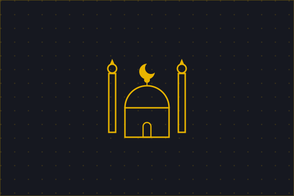

I work directly with the teams who use the software.
I’m Syed Badr, a Forward Deployed Engineer working alongside client teams to take software from architecture to production. My work spans live GIS monitoring, AI forecasting, and the automation that keeps complex systems running.
My background is in Computer Science, Cybersecurity, and QA automation. I also contribute to open-source projects, design 3D-printed parts, and build hardware for coffee grinders and community spaces.
Helping schools plan for what’s next with time-series forecasts and interactive data exploration.
Data preparation
Interactive forecasts
PythonFlaskProphet
openGBW
Turning a timed coffee grinder into a precision weight-based system with custom hardware.
Live weight sensing
Automatic shut-off
ESP32C++3D printing
AI Forecast Pipeline
Connecting time-series forecasting with clear, AI-generated recommendations people can act on.
Time-series modeling
AI recommendations
PythonProphetOpenAI
OpenMasjidSolutions

Contributing software, security audits, and hardware designs to an open masjid management platform.
Security auditing
Custom hardware
Full-stackSecurityCAD
n8n AI Automation Engine
Connecting data sources, ML inference, and LLM summaries in automated reporting workflows.
Workflow orchestration
Automated reporting
n8nPythonOpenAI
Healthcare Demand Forecaster
Forecasting patient volume and resource demand, with plain-language allocation guidance.
Demand modeling
Allocation guidance
scikit-learnProphetPandas
Raspberry Pi Adhan Player
A reliable daily prayer-time player built around Python, a Raspberry Pi, and a little automation.
Daily scheduling
Reliable playback
PythonRaspberry PiREST APIs
File Integrity Tracker
Verifying file integrity on the Ethereum testnet with a decentralized, tamper-proof record.
File hash verification
On-chain records
SolidityReactWeb3.js
Prompt Injection Test Lab
Planned concept
A proposed testing tool for evaluating how AI assistants respond to untrusted documents and instruction overrides.
Repeatable evaluations
Response tracing
PythonLLM APIsFastAPI
SOC Alert Triage Assistant
Planned concept
A proposed analyst workspace that groups related security alerts and drafts incident summaries linked to their evidence.
Alert correlation
Human-reviewed summaries
PythonLLM APIsPostgreSQL
04 / REFERRALS
From people I’ve worked with
Each crate carries a referral. It opens at the gate. Select a crate to bring it forward.
“
Syed stands out as an exceptional engineering talent. He made a tremendous impact by automating our test cases with Cypress, reducing our regression cycle from 2 weeks to just 2 hours and bringing measurable cost savings to our QA operations.
GK
George KuriakoseSenior Director, Engineering · Billtrust
Syed's strong technical abilities in Cypress automation and troubleshooting Jenkins pipelines were impressive. His proactive attitude and commitment to quality were evident in every project, making him a valuable asset to our team.
VM
Vernon McLaurin JrTest Automation Engineer, Billtrust
From the very beginning, Syed impressed me with his technical skills and eagerness to learn. He consistently delivered high-quality work, often taking the initiative and approaching every task with a strong sense of responsibility. He would be a valuable addition to any team.
Syed showed strong technical skills from day one, jumping into a variety of projects across different languages. He's a great team member: curious, reliable, and always thorough in his work, seeing projects through to the finish line.
Syed's ability to quickly absorb new concepts and apply them effectively stood out immediately. He's a great collaborator who approaches challenges with a positive, solutions-oriented mindset. Any team would be lucky to have someone with his drive, curiosity, and professionalism.